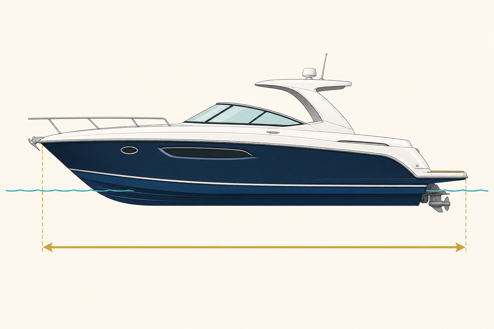

Eslora
Longitud de la embarcación medida desde el punto más saliente de proa hasta el punto más saliente de popa.
Examen: no confundir con la longitud de flotación, que solo considera el casco sobre la línea de agua.
Longitud de l'embarcació mesurada des del punt més sortint de proa fins al punt més sortint de popa.
Examen: no s'ha de confondre amb la longitud de flotació, que només considera el buc sobre la línia d'aigua.